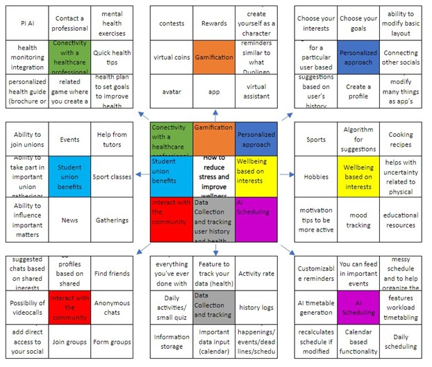

A7: Reflections on Map, Sketch, and Decide
Week 3, Reflections from the Map, Sketch, and Decide phases
Starting the design process has to be the most exciting part of any design process. I think during our Map, Sketch, and Decide phases the hardest parts were the beginning and the end. Producing unfiltered ideas and picking just one idea to run with. Like in many other projects, this project had multiple promising options we could have explored.
For our projects we used multiple different techniques and I believe the more we have different techniques the better the outcome. It is good to explore all viable options to get better overall understanding. Our techniques included, but were not limited to, lotus Blossom, Storyboarding, Cray 8s, Lightning Demos and Sticky Decisions, to name a few.
Especially Lotus Blossom and Storyboarding I had familiarised myself before on other courses before. During Innovation course last semester, we used quite a lot of Lotus Blossom. Storyboard we used in Marketing course during summer. But other aspects of planning phase were new to me. I learned to use How Might We questions to further dissect the purpose and goal of our project. I think this part was very crucial for the project such as the overall highlight on setting a long-term goal. It was important so we wouldn’t lose the purpose and actual and goal of our mission. I have noticed I haven’t paid enough attention to forming a long-term goal sentence in projects before but rather having a faint idea of what I am aiming for. Having a concrete sentence as a goal is much easier to follow and keep track of.
Like I mentioned before, one of the hardest parts was coming up with on a whim. Getting ideas on a paper without any filter is surprisingly hard especially if you need to produce multiple ideas in a very short time. There is a certain block one must overcome and just pushing out ideas no matter how ridiculous it might seem at the time. Having no filter is also the best thing during ideation phase. Hardest and best simultaneously. One has to remember that ugly is okay and nothing needs to be perfected just yet. We have a good team that is not afraid to produce content and share it with the rest of the team. Everyone worked efficiently and we didn’t run dry during this phase.
Most of the tasks we made using paper and pen, which I personally prefer. It makes your ideas come into reality and they feel much more real and concrete. Sticky Notes exercise I found the most helpful when comparing the ideas and choosing possible solutions. Just as plain as having a regular post-it note can help so much. I enjoyed lightning demos for their fast nature. A lot of selection in such a short period of time and better inside understanding of the presented idea.
The second hardest part of this phase was narrowing down all the generated information and possible solutions to just one option to continue to work further. I think that is the reason why we decided to work on a much larger concept than just one certain feature, aspect, or problem. I feel like our solutions tackles more ground which could be both a blessing and a curse.